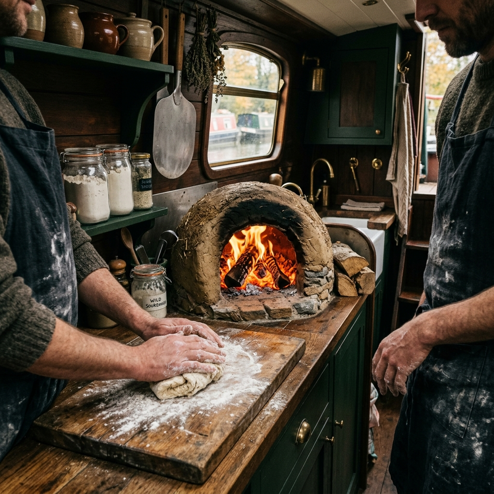

Seventy-Two Hours of Wild Patience
At the heart of our floating galley is a sourdough culture we call "Old Arthur," captured from the wild yeasts drifting through the Limpley Stoke valley. Unlike commercial pastry, which relies on fast-acting synthetic leavening, our crusts take three full days to develop. We use Maris Widgeon heritage wheat, a rare variety prized by traditional roof-thatchers for its tall stalks and by traditional bakers for its deep, nutty complexity.
The dough is laminated with organic pasture-fed lard, chilled by the canal's natural thermal mass below the waterline, and folded twenty-four times to produce an extraordinarily flaky, crisp crumb. When baked in the intense, radiant heat of our English oak-fired oven, the wild acids react with the animal fats to produce a deeply caramelized, dark golden crust that holds its crunch even when drenched in our bone marrow gravy. This is not fast food; it is an edible record of the valley's native microflora.